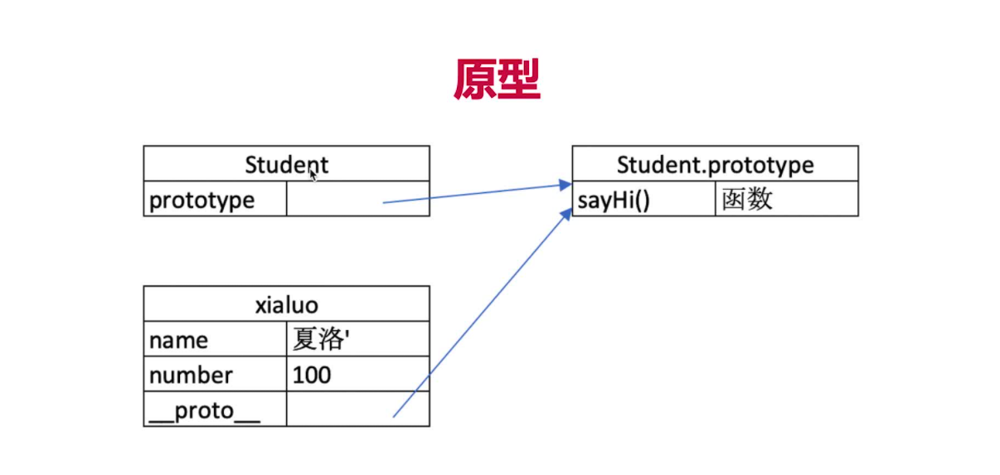

前端面试题JS篇
本文最后更新于：6 months ago
JS基础篇
正则表达式
var reg = /^(A|D|W|S){1}[0-9]{1,2}$/;
padStart、padEnd、parseInt的第二参数
padStart的第一参数n 是指将目标字符串用第二参数c扩充到n位（是一共n位 不是n个c）
parseInt第二参数是 将第一个参数以几进制转换2-36
手写js深拷贝
1 | |
递归可以深入研究下 添加到toDo中 递归理不清的问题
typeof的用法
- 可以返回所有的基本数据类型 undefined string number boolean
- 引用数据类型只能返回object，不能具体区分是array还是object
- typeof function返回值就是function
举例：typeof(class c{}) 也是function
原型和原型链
题目：
- 如何准确判断一个变量是不是数组
- 手写一个jquery，考虑插件和扩展性
- class的原型本质，怎么理解
class的用法
1 | |
有哪几种继承方式
instanceof进行类型判断
1 | |
节流防抖代码实现
1 | |
原型
- 每个class都有显式原型prototype
- 每个class实例化后的对象都有隐式原型__proto__
- 实例的隐式原型指向对应class的显式原型
- class类具有定义的属性和方法，也有显式原型prototype。而将这个class类实例化后就有了隐式原型__proto__，即shilihua.proto === Student.proptotype

原型链
首先，每个对象在初始化的时候都会被添加上__proto__属性，指向该对象的原型对象，同时在js中万物皆对象，所以该对象的原型对象也有__proto__属性指向它的原型对象，这样一直指下去就会形成一个原型形成的链，简称原型链。
闭包
什么是闭包
闭包指一个函数有权访问另一个函数作用域中的变量
创建闭包的常见方法
创建闭包最常见方式，就是在一个函数内部创建另一个函数
闭包的表现
- 函数作为参数被传递
1
2
3
4
5
6
7
8
9
10function create() {
const a = 100
return function() {
console.log(a)
}
}
const fn = create()
const a = 200
fn() // log值为100 - 函数作为返回值被返回
1
2
3
4
5
6
7
8
9function print(fn) {
const a = 200
fn()
}
const a = 100
function fn() {
console.log(a)
}
print(fn) // 打印值仍为100闭包的作用
- 封装变量（在function中定义私有变量，return一个function，变量即不会被拿到或修改）
所有（闭包）自由变量的查找 是在函数定义的地方，向上级作用域查找 不是在执行的地方
闭包的实际应用场景
- 隐藏数据
1
2
3
4
5
6
7
8
9
10
11
12
13
14
15
16// 闭包cache 数据隐藏
function createCache() {
const data = {}
return {
set: function(key,val) {
data[key] = val
},
get: function(key) {
return data[key]
}
}
}
const c = createCache()
c.set("a",100)
console.log(c.get("a")) - 循环绑定事件
for循环中给标签添加监听事件addEventListener
调用的时候循环已经结束 调用时的增量i为循环结束时i的取值了1
2
3
4
5
6
7
8
9let a,i
for(i=0;i<10;i++) {
// 这里面的i都是10
}
// 正确写法
let a
for(let i=0;i<10;i++) {
// 这里都是块级作用域
}
this的使用场景
- 作为普通函数 window
- 使用call bind apply （三个的区别 call可直接换this指向 bind是有返回值 返回值再调用）
- 作为对象方法被调用 指代的就是这个对象本身
- 在class方法中调用 当前实例本身 setTimeout注意
- 箭头函数 ()=>{this} 和上级作用域的值一致
1
2
3
4
5
6
7
8
9
10
11
12// 对应上方点2
function fn1() {
console.log(this)
}
fn1.call({x:100}) // {x:100}
const fn2 = fn1.bind({x:100})
fn2(); // {x:100}
setTimeout() {
function() {
console.log(this) // this === window
}
}
this取什么值是在函数被执行的时候确定的，不是在定义的时候
面试题目
手写bind函数
1 | |
同步异步
基于js是单线程语言 callback回调
异步不会阻塞代码执行
同步会阻塞代码执行
面试题
同步异步的区别是什么
异步不会阻塞代码执行
同步会阻塞代码执行
手写用promise加载一张图片
1 | |
前端使用异步的场景有哪些
请求后台数据
JS异步-进阶
event loop
- event loop过程1
- 同步代码，一行一行放在call Stack执行
- 遇到异步，会先记录下，等待时机（定时，网络请求）
- 时机到了，就会移动到callback queue
- event loop过程2
- 如果call stack为空（同步代码执行完），event loop开始工作
- 轮训查找callback queue，如果有则移动到call stack
- 然后继续轮训查找
dom事件与event loop关系
- js是单线程的
- 异步都是基于event loop的
- dom事件也使用回调，也是基于event loop
1 | |
宏任务微任务
- 宏任务
- setTimeout
- setImmediate
- setInterval
- requestAnimationFrame
- I/O
- UI rendering
- 微任务
- process.nextTick
- promise (then)
- object.observe
- mutationObserve
前端性能优化
箭头函数的优点
- 简洁的语法
- 可以隐式返回，可省略大括号和return，减少代码量
- this的指向问题，箭头函数内的 this 是词法绑定的，与外层函数保持一致
箭头函数的缺点
- 做为构造函数的时候不能使用箭头函数
- 真正需要this的时候如给元素绑定click事件的时候,执行的回调函数不能使用箭头函数。
- 我们需要使用arguments对象的时候不能使箭头函数。箭头函数中没有arguments对象。
- 对象的方法也不可以使用箭头函数
本博客所有文章除特别声明外，均采用 CC BY-SA 4.0 协议 ，转载请注明出处！